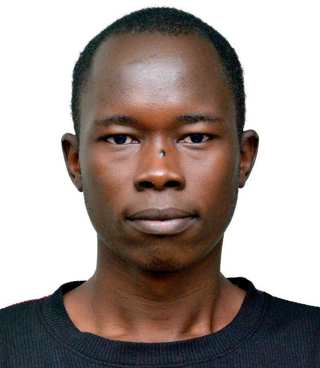

01 /
Machining
Operating conventional lathes, milling machines, surface grinders and CNC milling machines.
I'm Okino Ceaser Lawrence, a maintenance technician with a practical background in machining, fitting and mechanical problem-solving.

A hands-on approach to mechanical work, built through technical training and workshop experience.
I enjoy understanding how machines work and putting that knowledge to use.
I work as a Maintenance Technician at Quality Plastics in Mukono. My experience includes mechanical troubleshooting, fitting, assembly and the operation of machining equipment.
I'm committed to continuing to learn, improve and contribute to reliable operations.
A mix of technical understanding and practical shop-floor experience.
Operating conventional lathes, milling machines, surface grinders and CNC milling machines.
Mechanical troubleshooting, fitting and assembly with a focus on dependable equipment.
Interpreting engineering drawings, precision machining and component fabrication, including plasma cutting.
From workshop practice to hands-on industrial maintenance.
Supporting mechanical maintenance and troubleshooting in an industrial setting.
About Quality Plastics ↗Machined and fitted components from drawings, operated machining equipment, inspected dimensions, and supported maintenance and alignment.
About Proheli ↗Worked on machining, grinding, milling and gear-cutting, as well as fabrication, assembly and maintenance support.
Read about Luweero Industries (UPDF) ↗Practical experience across milling, lathe work, grinding, drilling, fabrication and foundry work.
Read about John Lugendo’s workshop ↗For professional opportunities and conversations.
ceaserlawrenceokino@gmail.com